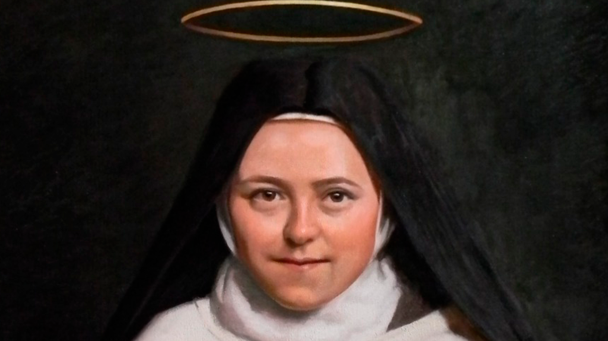

Oração de Santa Teresinha
stas rosas que levas em te “Ó, Santa Teresinha do Menino Jesus, modelo de humildade, de confiança e de amor! Do alto dos céus, despeje sobre nós eus braços: a rosa da humildade para que vençamos nosso orgulho e aceitemos o jugo do Evangelho; a rosa da confiança para que nos abandonemos à vontade de Deus e descansemos em Sua Misericórdia; a rosa do amor para que, abrindo nossas almas sem medida à graça, realizemos o único fim para o qual Deus nos criou à sua imagem : Amar- Lhe e fazer- Lhe amar. Tu que passas teu Céu fazendo o bem na terra, ajuda-me nesta necessidade e concede-me do Senhor o que te peço, se for para glória de Deus e para o bem de minha alma. Amém.”
.